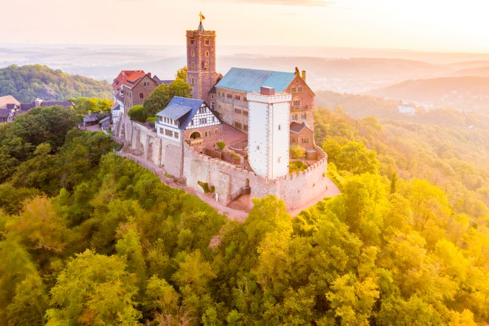
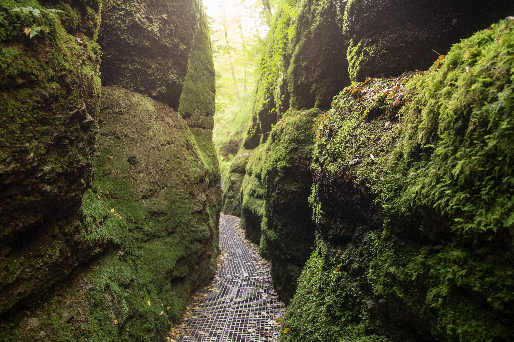
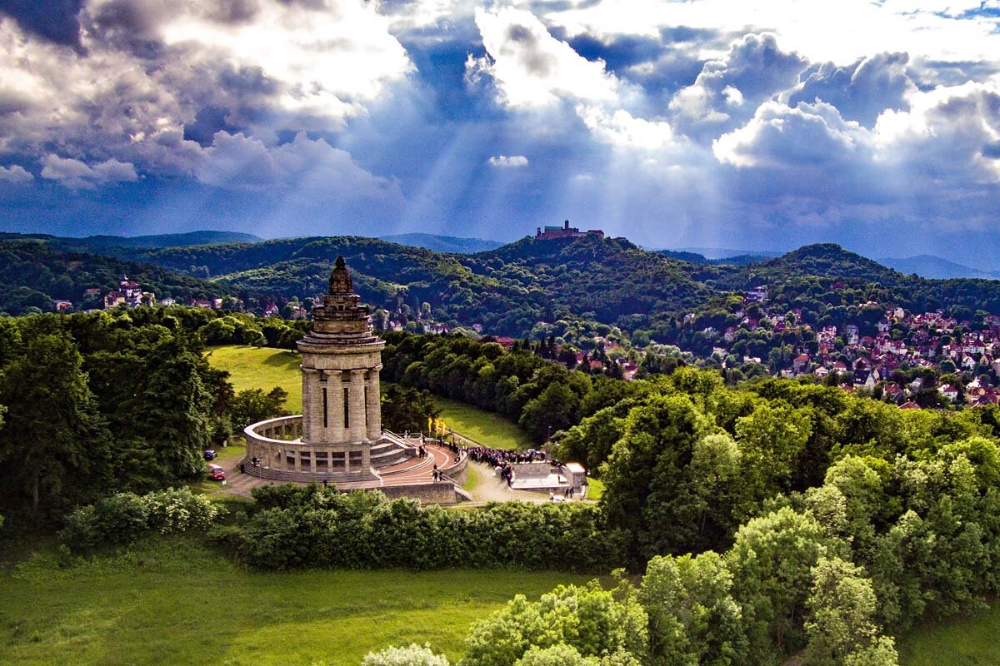
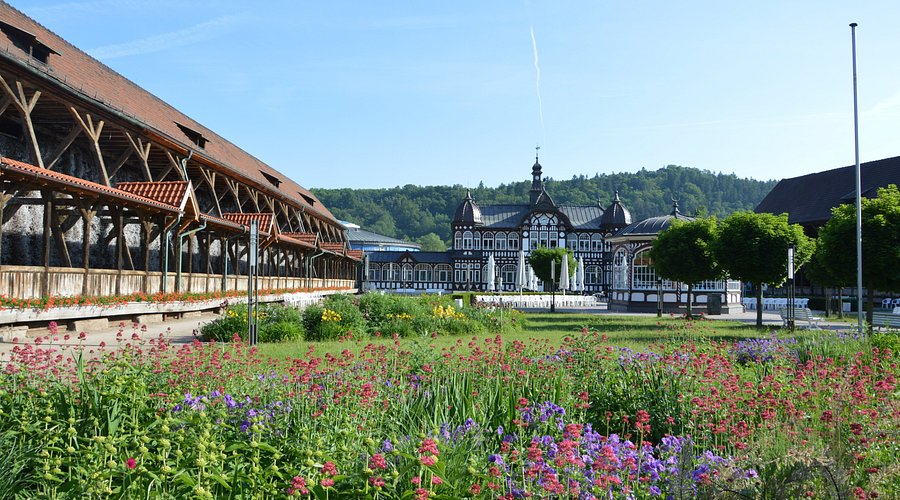
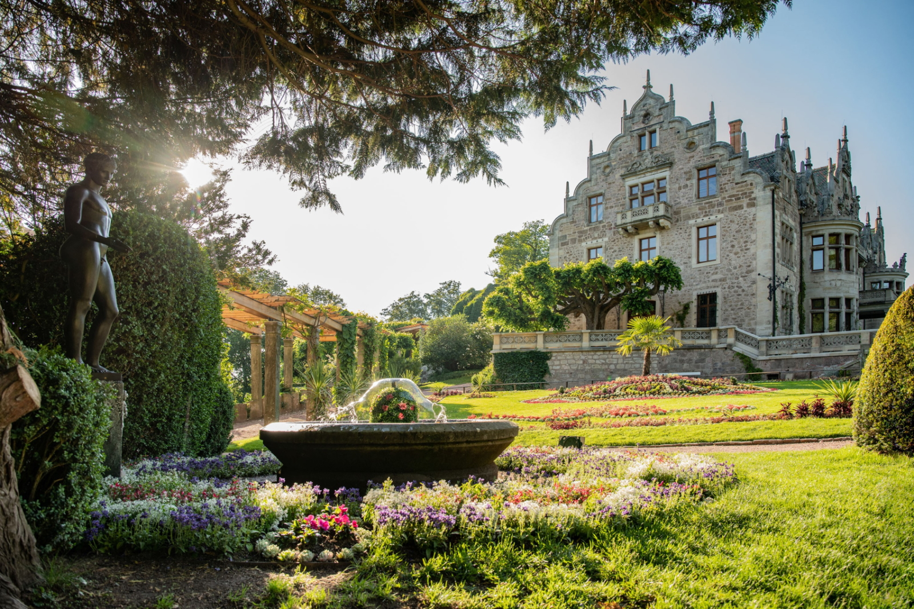

Erleben Sie UNESCO-Weltkulturerbe, atemberaubende Natur und historische Schätze im Herzen Thüringens
Jetzt EntdeckenFünf unvergessliche Erlebnisse, die Ihren Besuch zu etwas Besonderem machen

Die über 1.000 Jahre alte Wartburg thront majestätisch über Eisenach und zählt zu den bedeutendsten Burgen Deutschlands. Hier übersetzte Martin Luther das Neue Testament ins Deutsche und Richard Wagner ließ sich zu seiner Oper "Tannhäuser" inspirieren. Die Führung durch die prächtigen Festsäle, die Lutherstube und die mittelalterlichen Sammlungen ist ein absolutes Muss!
Mehr erfahren →
Ein magisches Naturwunder! Die Drachenschlucht ist eine der spektakulärsten Klammen Deutschlands. Auf schmalen Holzstegen wandern Sie durch die bis zu 10 Meter tiefe und nur 68 cm schmale Schlucht, vorbei an moosbedeckten Felswänden und plätschernden Wasserfällen. Ein einzigartiges Naturerlebnis, das Sie in eine andere Welt entführt!
Mehr erfahren →
Hoch über Eisenach erhebt sich das imposante Burschenschaftsdenkmal, ein 34 Meter hohes Monument, das an das Wartburgfest 1817 und die deutsche Freiheitsbewegung erinnert. Von hier genießen Sie einen atemberaubenden Panoramablick über die Stadt und den Thüringer Wald. Die Aussichtsplattform bietet perfekte Fotomotive und unvergessliche Momente!
Mehr erfahren →
Erleben Sie Meeresluft mitten in Thüringen! Das über 230 Jahre alte Gradierwerk ist eine beeindruckende Holzkonstruktion, über die salzhaltiges Wasser rieselt und dabei feinste Soletröpfchen in die Luft versprüht. Ein Spaziergang hier wirkt wie eine natürliche Inhalation und ist gut für die Atemwege. Ein entspannendes und gesundes Erlebnis für die ganze Familie!
Mehr erfahren →
Ein romantisches Juwel! Das Schloss Altenstein mit seinem 160 Hektar großen Landschaftspark gehört zu den schönsten Parkanlagen Deutschlands. Spazieren Sie durch verwunschene Grotten, über malerische Brücken und vorbei an künstlichen Ruinen im englischen Stil. Der Park bietet zu jeder Jahreszeit bezaubernde Ausblicke und lädt zum Träumen und Entspannen ein!
Mehr erfahren →Perfekt geplant für ein unvergessliches Erlebnis
Anreise nach Eisenach, Check-in im Hotel und erstes Kennenlernen der Stadt bei einem gemütlichen Abendspaziergang
Eisenach entdecken →Geführte Tour durch das UNESCO-Weltkulturerbe Wartburg. Entdecken Sie die Lutherstube, den Festsaal und die faszinierende Geschichte dieser legendären Burg
Wartburg-Infos →Genießen Sie regionale Spezialitäten in einem der traditionellen Restaurants der Eisenacher Altstadt
Restaurants entdecken →Abenteuerliche Wanderung durch die mystische Drachenschlucht mit ihren beeindruckenden Felsformationen und natürlichen Wasserspielen
Zur Drachenschlucht →Besuch des romantischen Schlosses Altenstein mit ausgedehntem Spaziergang durch den traumhaften Landschaftspark
Schloss Altenstein →Check-out und Heimreise mit unvergesslichen Erinnerungen an ein wunderbares Wochenende in Eisenach
Alles, was Sie für Ihren Besuch wissen müssen
Eisenach ist perfekt erreichbar: per Auto über die A4, mit dem ICE in nur 2,5 Stunden von Frankfurt oder mit dem Fernbus aus ganz Deutschland
Von historischen Hotels bis zu gemütlichen Pensionen - Eisenach bietet für jeden Geschmack und Geldbeutel die passende Übernachtung
Genießen Sie Thüringer Spezialitäten wie Rostbratwurst, Klöße und Mutzbraten in traditionellen Gaststätten und modernen Restaurants
Eisenach ist ganzjährig ein Erlebnis! Besonders schön: Frühling und Herbst für Wanderungen, Winter für romantische Stimmung auf der Wartburg